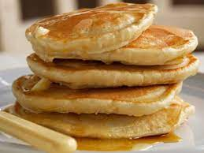

American Pancakes Recipe

Description
American pancakes are small, fluffy pancakes that are great for a weekend brunch. Stack them on top of each other and enjoy plain or with any topings you like such as maple syrup, bacon, chocolate spread, fresh fruit and more.
Ingredients
- 135g plain flour
- 1 tsp baking powder
- 130ml milk
- 1 large egg
- 2 tbs melted butter (allowed to cool slightly
- dash of salt and sugar
Steps
- Sift the flour, baking powder, salt and sugar into a large bowl.
- In a separate bowl or jug, lightly whisk together the milk and egg, then whisk in the melted butter.
- Pour the milk mixture into the flour mixture and, using a fork, beat until you have a smooth batter. Any lumps will soon disappear with a little mixing. Let the batter stand for a few minutes.
- Heat a non-stick frying pan over a medium heat and add a knob of butter. When it's melted, add a ladle of batter (or two if your frying pan is big enough to cook two pancakes at the same time). It will seem very thick but this is how it should be. Wait until the top of the pancake begins to bubble, then turn it over and cook until both sides are golden brown and the pancake has risen to about 1cm thick.
- Stack them and add your favourite toppings to serve
Enjoy!